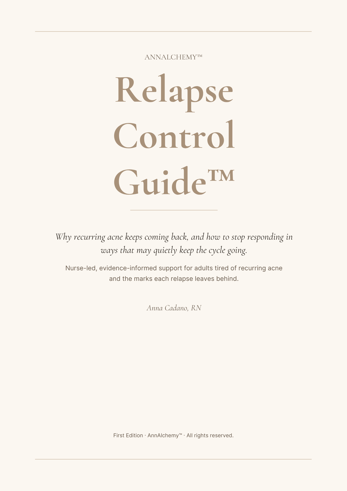
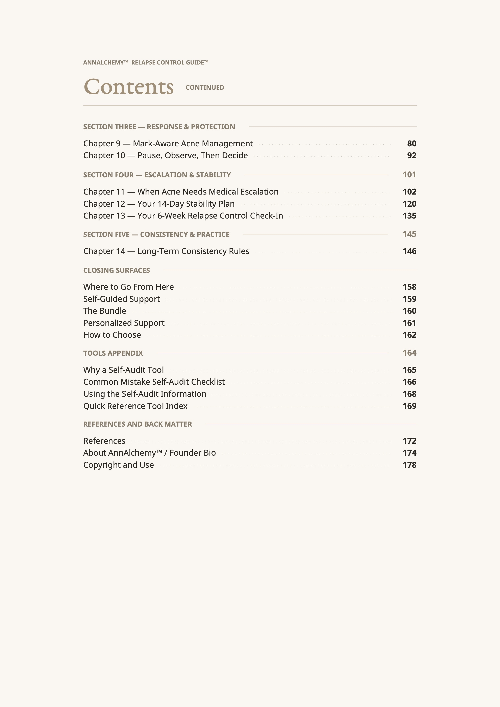
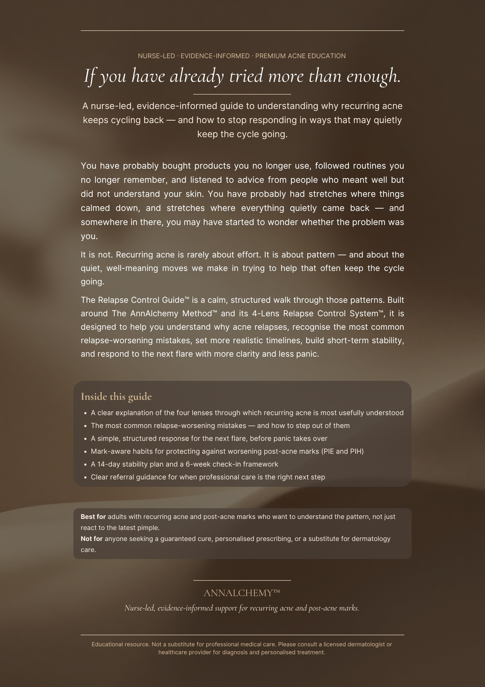

You do not need more panic, more random product switching, or another routine that feels too aggressive to sustain. You need a clearer, more strategic way to understand recurring acne, reduce avoidable flare mistakes, and make smarter next-step decisions for both breakouts and acne marks.
This nurse-led, evidence-informed framework is designed to help you clarify what is active, calm what is irritated, correct what is recurring, and maintain progress more strategically, while accounting for common post-acne marks like redness and discoloration.
One 45-minute nurse-led interpretation and prioritization session, included with the founding-price guide, in exchange for an honest written review after you complete the guide. Your choice whether to be credited by name or anonymously. Critical reviews are welcome; honest ones are required.
Closes when 10 readers complete checkout. Educational support only. Not diagnosis, prescription, or medical care.
The AnnAlchemy Method™ helps you move from confusion and trial-and-error to more clarity and more control over recurring acne and acne marks.
This is for you if your acne improves, then comes back. If your routine feels too harsh, too confusing, or too hard to sustain. If you still do not know whether you are dealing with active acne, irritation, residual redness, discoloration, or all of the above.
This framework focuses on the cycle behind the breakout, including recurring acne activity, confusion around likely aggravators, poor tolerability, and the marks acne can leave behind.
You may have already tried products, routines, restarts, stronger actives, stricter habits, and hoping the next plan will finally be the one. But when acne keeps coming back, the deeper problem is often not just the breakout itself. It is the cycle behind it.
I am a nurse. I am also someone who spent years caught in the exact cycle you may be in right now: improve, relapse, panic, restart, and slowly stop trusting your own judgment.
My name is Anna Cadano, RN. I have been a registered nurse since June 2008, and my skin and my career began in the same season of my life. The recurring breakouts started while I was waiting for the nursing board exam results that June.
What followed is the part many people reading this will recognize. I looked for the answer in products. I bought what I could within my budget, then stretched the budget, because frustration has a way of making expensive feel reasonable when all you want is your skin back. I followed strangers online whose results looked convincing. The breakouts came back, often worse. That loop repeated for years.
It is the same loop AnnAlchemy™ exists to interrupt.
If this sounds familiar, the Relapse Control Guide™ was built for this exact cycle.
See the Relapse Control Guide™
— Anna Cadano, RN
Registered Nurse since 2008. Founder, AnnAlchemy™ (2025).
hello@annalchemy.org · Taguig City, Philippines
Get matched to the right AnnAlchemy™ guide in 30 seconds. Three questions. No email needed.
This is not a diagnosis. It is a way to help you choose wisely instead of guessing.
DM the word SKIN on TikTok and Anna can point you toward the best starting point without pushing you into the wrong resource.
The Quick Skin Check is the more thorough routing tool. If your answers above felt mixed, if you are unsure whether your pattern is recurring acne or something that only resembles it, or if you want your personalized starting-point recommendation sent to your email, take this version.
Educational only. Not diagnosis, prescription, or medical care.
60 seconds. No payment. Recommendation sent to your email.
Created by Anna Cadano, RN. Nurse-led, evidence-informed.
This framework is built to help you understand recurring acne more intelligently, protect tolerability, and account for the marks inflammatory acne can leave behind.
Recurring acne is not simply a hygiene issue or a random cosmetic inconvenience. It can involve several connected skin-level factors, including skin oil, dead skin cells building up inside the pore, acne-related bacteria, and inflammation. When those factors keep interacting, the result can feel like a repeating pattern — not just an isolated breakout.
Adult acne may be influenced by recurring pattern factors such as hormonal signaling, cycle timing, stress, sleep disruption, or other aggravator patterns. These clues matter, even though they are not diagnostic on their own.
Acne plans often fail because the skin becomes too irritated, too inflamed, or too inconsistent to maintain. Better support means giving tolerability and routine sustainability the attention they deserve.
Post-inflammatory redness and discoloration are common after inflammatory acne. They affect how you perceive progress, impact quality of life, and require realistic expectations instead of panic.
Make your skin feel less random by identifying recurring clues, possible aggravators, and what may actually be happening.
Reduce unnecessary irritation, improve tolerability, and step out of the over-treatment cycle.
Build a more strategic, realistic, and sustainable approach based on what the pattern is showing.
Shift from reactive acne management to a steadier, more confident, maintenance-aware process.
Active acne control comes first. Mark recovery follows. Both matter.
Not everything still visible on your skin is the same problem. Some of it may be active acne. Some of it may be what acne left behind. They do not always improve on the same timeline, and they do not always deserve the same priority.
Every relapse affects confidence, decision-making, and how much trust you still have in your own ability to manage what is happening.
You should not have to choose between generic advice that does not fit your situation and trying to figure everything out alone through trial-and-error. That is how people end up in the same cycle: confusion, overreaction, inconsistency, discouragement, and repeated relapse.
This process is not about chasing perfection. It is about replacing blind reaction with better observation, steadier decisions, and a more manageable way to protect progress over time.
The full Relapse Control Guide™ is reserved for readers, but here is a look at the cover, the chapter overview, and the back cover, so you know what you are getting before you decide.

Cover and brand presentation.

Chapter overview. Fourteen chapters across pattern recognition, response, escalation, and consistency.

Scope, audience, and educational positioning.
Start with the Relapse Control Guide™ for ₱1,697 / $27. For the other guides and the 1:1 support, join the notify list to be told first when each one launches.
Most adults dealing with recurring acne have spent ₱5,000 to ₱15,000 (roughly $80 to $240) across the past year on cleansers, serums, derma visits, and products that did not hold. ₱1,697 is less than a quarter of that, for a structured way to stop the cycle of guessing. Add the months between each restart, and the marks each relapse left behind, and the real question is not what the guide costs. It is what another year of the same cycle costs. The Relapse Control Guide™ is at founding price now; it steps up to ₱3,027 / $49 once the first cohort fills.
For adults tired of recurring acne and the post-acne marks that follow.
Understand recurring flare cycles, reduce common relapse mistakes, and account for the post-acne redness and discoloration that recurring inflammation can leave behind.
Founding Reader Bonus included
First 10 buyers at the founding price receive a free 45-minute AnnAlchemy Clarity Session™ ($127 value) in exchange for an honest written review. Anonymous or credited, your choice.
For adults who feel like something is triggering their acne, but cannot clearly tell what.
In development. Join the notify list to hear first.
Organize recurring acne clues around timing, stress, sleep, cycle shifts, irritation, and lingering post-acne marks so your skin feels less random and more understandable.
For acne-prone, reactive skin that needs less overload and more tolerability.
In development. Join the notify list to hear first.
Reduce unnecessary irritation, improve tolerability, and avoid worsening active acne or post-acne redness and discoloration through over-treatment.
For adults whose bumps may not be acne at all, and who keep treating the wrong thing.
In active development. Join the notify list to hear first.
Recognize whether your pattern looks more like acne or something commonly mistaken for it, so you can stop treating the wrong thing and prepare for a clinician's evaluation.
The three core relapse-and-routine guides in one private portal download.
Available when the three guides are published. Join the notify list to hear first.
The complete self-guided system for recurring acne, pattern mapping, and barrier-first support in one place.
A focused 1:1 strategy session for adults who want help understanding what is active, what is residual, what may be driving the cycle, and what their next-step priorities should be.
Booking opens once the supporting guides are released. Join the notify list to be first.
AnnAlchemy™ Starter Library™ bundle, tracker template, next-step roadmap, medical-visit prep sheet, 7-day reset tracker, routine simplification checklist, reintroduction worksheet, Relapse Risk Audit™, Trigger Mapping Sheet™, Barrier Distress Check™, and Acne Pattern Summary Page™.
A nurse-led, evidence-informed coaching experience for adults who want more support implementing a strategic, tolerable, relapse-aware, and mark-aware acne management process over time.
Opens after the guides and Clarity Session launch. Join the notify list to be first.
All bonuses from the AnnAlchemy Clarity Session™ plus: async support during business days, tracker feedback, photo review commentary, personalized dashboard, maintenance extension option, written weekly focus notes, progress check-ins, and a 7-day brief follow-up.
If you have been here before, trying everything for acne and watching nothing work, or watching it get worse, your pattern may be worth a second look. Some bumps that look like acne are not, and treating the wrong thing is one of the most common reasons a routine never holds. A dedicated recognition guide, Is It Really Acne?™, is in active development for exactly this question. Until it is ready, the most useful step is to bring this concern to a licensed clinician, who is the only person who can diagnose this. Join the notify list to hear first when Is It Really Acne?™ is available.
Acne is a chronic inflammatory skin condition that commonly continues into adulthood. Current dermatology guidance points to more than product selection alone. It also supports maintenance planning, skincare and tolerability, and knowing when to escalate to medical care.1 The marks acne can leave behind, such as lingering redness (post-inflammatory erythema) and brown or dark discoloration (post-inflammatory hyperpigmentation), are common after inflammation and often need their own expectations and timeline, separate from active breakouts.
1. Reynolds RV, Yeung H, Cheng CE, et al. Guidelines of care for the management of acne vulgaris. J Am Acad Dermatol. 2024;90(5):1006.e1-1006.e30. doi:10.1016/j.jaad.2023.12.017
The Relapse Control Guide™ is built for adults who are already tired of guessing — readers who are ready to implement faithfully alongside any clinical care they already have. If that is you, the Implementation-Backed Refund Policy protects your investment in a way most digital guides never offer.
This is not a no-questions-asked refund promise. It is a process-backed confidence statement. The premise is simple: implement the guide faithfully across your prescribed window, document your effort honestly, and if the guide's own success indicators show no observable improvement — you receive a full refund. The structure exists so the readers who do the work are protected, and the readers who don't are not subsidized by the ones who do.
Take the free AnnAlchemy™ Fit Assessment Quiz to find your track. Three tracks based on acne severity: Mild (8 weeks), Moderate (4.5 months), and Severe (6 months). Mild track readers self-assess inside the quiz with nurse photo review by Anna Cadano, RN, for refund-policy placement only. This is not a medical diagnosis. Moderate and Severe track readers confirm severity with their dermatologist.
Sign the Refund Agreement within your track's window (3 days for Mild, 7 days for Moderate or Severe). Submit baseline photographs within 24 hours of signing. Receive your personalized AnnAlchemy™ Implementation Tracker and begin your window.
Use each of the eleven required Relapse Control Guide™ tools on the schedule given in the guide. Fill in your AnnAlchemy™ Implementation Tracker honestly each week. Complete the Six-Week Self-Review at the six-week mark of your implementation window. Use the guide alongside any care plan from your dermatologist, doctor, or qualified healthcare provider — never in place of it.
If at the end of your window the Six-Week Self-Review shows no improvement across its five indicators and your severity classification has not improved, your purchase is refunded in full within 14 days.
The Relapse Control Guide™ teaches that success in recurring acne is not only visual. Less chaos, fewer rash decisions, better consistency, improved tolerability — these are the early indicators that often precede visible clearing. Anchoring the refund only to "no visible improvement" would contradict the guide's own teaching. The compound trigger rewards real effort and stays true to what acne care actually looks like over time.
A process-backed safety net for readers who implement the guide faithfully under any clinical care they already have, and want a refund pathway if the guide's success indicators show no movement within their classified severity window.
A no-questions-asked refund. A promise of clear skin. A replacement for dermatologist care. A substitute for active treatment in moderate or severe presentations. Available to readers who do not want to implement, do not have time to document, or are not ready to commit to a full window.
A note from Anna Cadano, RN: The Implementation-Backed Refund Policy is opt-in. You can purchase the Relapse Control Guide™ without it and still receive full access under standard terms. The policy is for the reader who wants both the guide and a protected commitment. If that is not you today, the guide will still serve you the moment you are ready to implement.
Start with the Relapse Control Guide™. The 1:1 support opens once the supporting guides are ready.
The only AnnAlchemy™ offer available today. A nurse-led, evidence-informed guide to understanding recurring acne and reducing the mistakes that quietly restart the cycle. Optional Implementation-Backed Refund Policy available.
Best if you want help understanding your acne pattern, likely aggravators, tolerability issues, and what your next priorities should be.
Best if you want guided implementation, accountability, and structured support while managing recurring acne and acne marks over time.
If you complete the intake and session process and still feel unclear on your next steps, your roadmap will be refined once at no extra cost.
If your written roadmap is not delivered, it will be completed at no extra charge.
If you fully participate in the Intensive and still feel the structure is unclear, you will receive an additional support check-in to tighten the plan.
You will leave with a clearer roadmap, structured notes, and next-step priorities.
These answers are here to help you make a clearer decision, not to push you into the wrong level of support.
The Relapse Control Guide™ is the first AnnAlchemy™ offer to be released. The other guides and the 1:1 support are in active development. Join the notify list to be told first, in a calm, low-volume email, when each one becomes available, including Is It Really Acne?™.
No spam. No upsell pressure. One short email per launch.
Choose the level of support that matches where you are, use the framework to make your skin feel less random, and take the next step toward a more strategic, tolerable, relapse-aware way to manage recurring acne and acne marks.
Start with self-guided clarity, a 1:1 strategy session, or high-support coaching.
Use the framework to make your skin feel less random and your decisions less reactive.
Understand what may be active, what may be residual, and where your priorities should go next.
Replace panic and guesswork with a steadier, more confident process.
P.S. If your acne keeps coming back, that does not automatically mean nothing works. It may mean the cycle still has not been understood clearly enough. And if you are also dealing with redness, discoloration, irritation, inconsistency, and routine confusion, then more force is probably not the answer.
A better strategy is.
AnnAlchemy™ helps you stop guessing, calm the chaos, and manage recurring acne with more clarity and control.